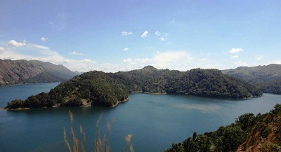

.jpg)
Munnar
Munnar is a popular hill-station of Kerala perched at an altitude of 1600 metres in the Western Ghats. Famous for its tea estates, various shades of green, blankets of mist and craggy peaks, Munnar is aptly known as the 'Kashmir of South India'.
Situated on the banks of three rivers- Madupetti, Nallathanni and Periavaru, Munnar is also blessed with natural view-points apart from the tea-plantations. Munnar is divided into Old Munnar, where the tourist information office is, and Munnar, where the bus station and most guest houses are located. The Eravikulam National Park, Salim Ali Bird Sanctuary and tea plantations are its major attractions.

Hill View Park
Located just about a kilometre from the Idukki city centre, the Hill View Park is set up approximately 350 feet from the Idukki dam. As the name suggests, Hill View Park is one such places in Idukki that offers spectacular views of the Cheruthoni and Idukki Dams.
Besides being a famous tourist destination of Idukki, this park is also a great place to spot diverse wildlife in its belt natural habitat. Hill View Park also has a couple of recent adventure additions including ziplining.
A sloping path up to Hill View Park opens visitors to a serene green atmosphere with a few eating options and toilet facilities as well. There is also a children's play area with slides and swings within this park. One of the top buys here is the famous spiced chocolate. Hill View Park is a great photo op for the Idukki dam, as it is not allowed to click pictures at the dam.